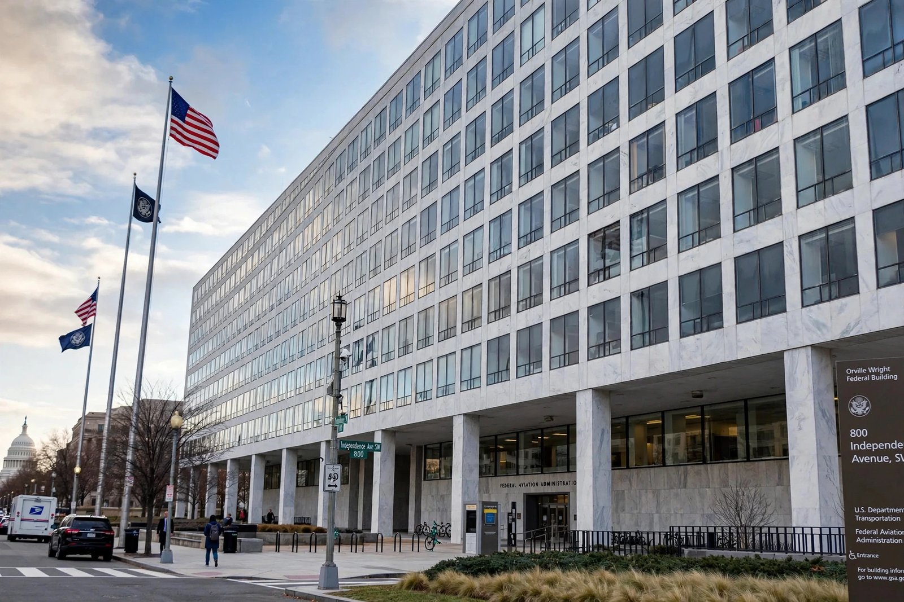

| Federal Aviation Administration | |
|---|---|
| Abbreviation | FAA |
| Formed | 23 August 1958 |
| Preceding agency | Civil Aeronautics Administration |
| Jurisdiction | United States federal government |
| Headquarters | Orville Wright Federal Building, Washington, D.C. |
| Employees | ~45,000 |
| Parent agency | US Department of Transportation |

The Federal Aviation Administration (FAA) is a US federal government agency within the US Department of Transportation that regulates civil aviation in the United States and surrounding international waters. Its powers include air traffic management, certification of personnel and aircraft, setting of national aviation standards, protection of US assets during the launch or re-entry of commercial space vehicles, and regulating commercial space transportation. The FAA was created in August 1958 as the Federal Aviation Agency, replacing the Civil Aeronautics Administration, and assumed its current name and departmental home in 1967.
Federal oversight of aviation began with the Air Commerce Act of 1926. A series of high-profile mid-air collisions — most notably the 1956 Grand Canyon collision that killed 128 people — exposed the inadequacy of the existing system and prompted Congress to pass the Federal Aviation Act of 1958, concentrating safety regulation and air traffic control in a single agency. The FAA gained responsibility for aviation security after the hijacking wave of the 1960s–70s (later transferred to the TSA in 2001) and oversaw the rebuilding of the air traffic controller workforce after the 1981 PATCO strike.
The FAA operates the world's largest air traffic control system, handling more than 45,000 flights a day in US airspace. It certifies aircraft designs and production through type certificates — a process that drew intense criticism after the Boeing 737 MAX accidents revealed over-delegation to manufacturers — and licenses pilots, mechanics and dispatchers. It also maintains the aircraft registry, issues regulations codified in Title 14 of the Code of Federal Regulations (the Federal Aviation Regulations), funds airport improvements through grants, and licenses commercial space launches through its Office of Commercial Space Transportation.
The FAA is led by an administrator appointed by the president and confirmed by the Senate for a five-year term. Its major lines of business include the Air Traffic Organization, Aviation Safety, Airports, and Commercial Space Transportation. Major facilities include the Mike Monroney Aeronautical Center in Oklahoma City (training and logistics) and the William J. Hughes Technical Center near Atlantic City, New Jersey (research and testing).
The long-running NextGen programme seeks to shift US air traffic management from ground-based radar to satellite-based navigation and surveillance (GPS and ADS-B), improving capacity and fuel efficiency. The agency has faced chronic funding and staffing challenges — including air traffic controller shortages and ageing infrastructure, thrust into public view by the January 2023 NOTAM system outage that forced the first nationwide ground stop since 9/11 — as well as new regulatory demands from drones, advanced air mobility and expanding commercial spaceflight.